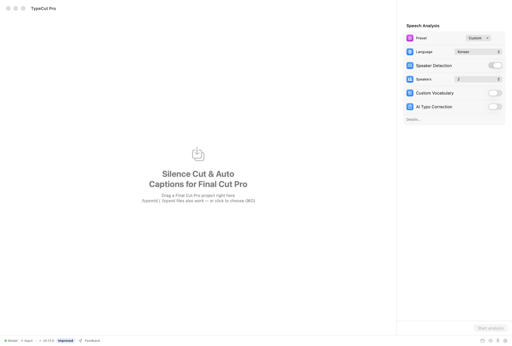
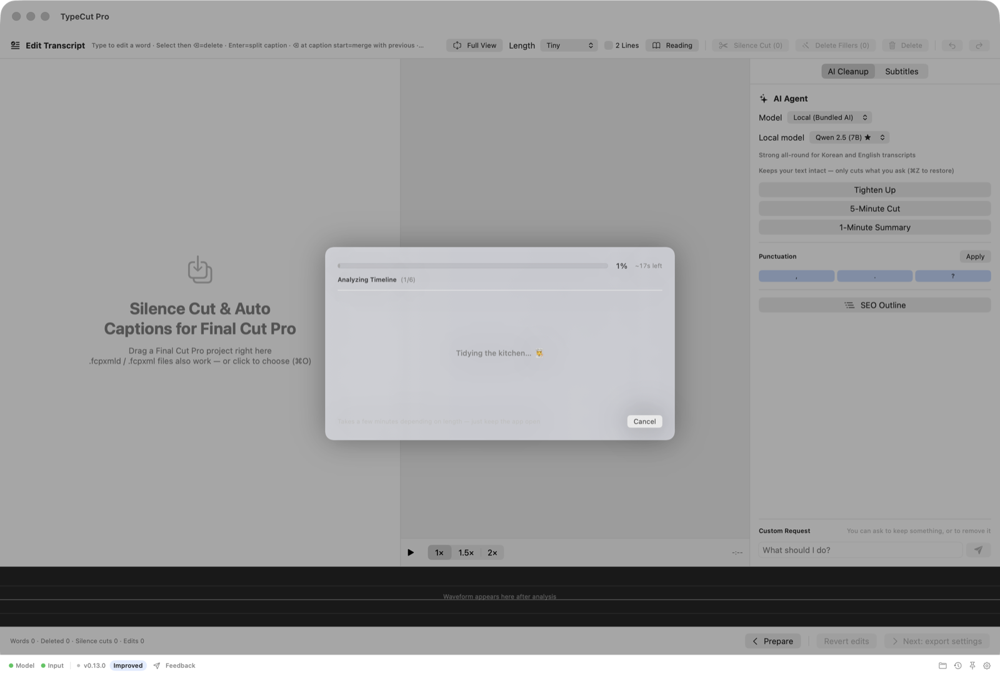
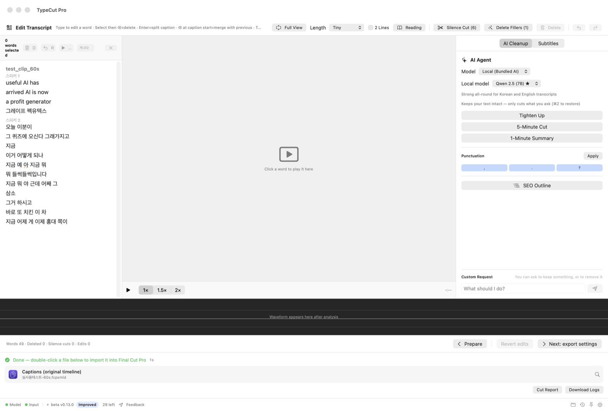
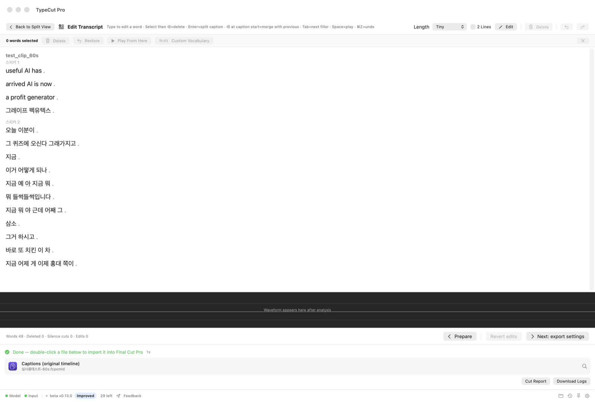
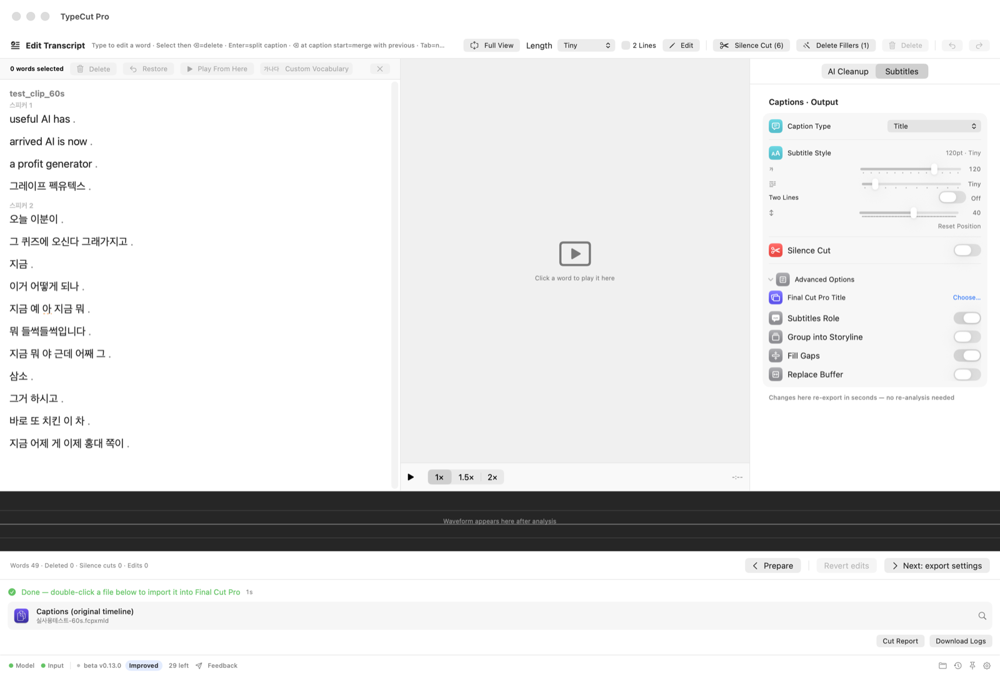

Drag the project in
Use the project you are already editing. No render or audio extraction.
Built for Final Cut Pro
Drop in your Final Cut project. TypeCut Pro cuts dead air, creates native captions, and turns the timeline into editable text — then hands it back without touching your original.

No export. No upload. No rebuild.
Use the project you are already editing. No render or audio extraction.
Cut silence, generate captions, or open the transcript editor.
Import the result and keep editing. Your original remains untouched.
Made for real timelines
Your edit stays an edit — not a flattened video. Connected clips, B-roll, storylines, adjustment layers, and timing stay intact.
Speech recognition and editing run locally. Footage and audio never leave your Mac.
Every result is a separate Final Cut project. The source project is never overwritten.
Generate real Final Cut titles or captions, ready to style and batch edit in FCP.
Mixed frame rates stay aligned, and caption placement matches the final render.
Three jobs. One round trip.
Built for interviews, lectures, podcasts, sermons, courses, and every other edit where the talking takes longer to clean than the pictures.
Find dead air between phrases and close it automatically. Choose how gently or aggressively the cut should breathe.

Local speech recognition and word-level alignment create captions that follow what was actually said — across every audio item in the timeline.

The transcript editor links every word to the timeline. Select text, press delete, and that span is cut from the new project.



Finish, do not fix
Adjust length, two-line mode, size, position, and title style with a live preview. TypeCut Pro detects horizontal and vertical projects and shows social safe zones where they matter.
Already have a favorite Final Cut title? Choose it — including third-party titles — and generate captions with its native values from the start.
Beta for Apple Silicon
Open the DMG, then drag TypeCut Pro into your Applications folder.
Open the app, dismiss the macOS alert, then go to System Settings → Privacy & Security → Open Anyway. Enter your Mac password when asked.
The first launch downloads the on-device speech model once. After that, the core workflow works offline.
Transparent beta note: the current build is not yet Apple-notarized, so macOS requires the one-time “Open Anyway” step above. Notarization is in progress; the app itself still runs locally and does not upload your media.
TypeCut Pro is free while in beta.